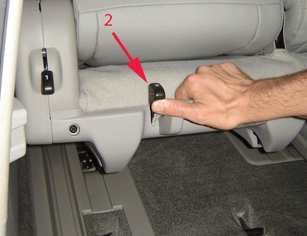
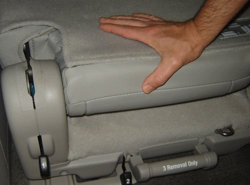

Condition/Cause/Correction # 2
Condition 2Seatback will not raise fully to upright position.
Cause 2
This condition may be caused by the rear latches not being fully secured.
Correction 2
Inspect to ensure rear seat latches are fully seated:

1. With the seat back down, release and partially lift the rear of the seat using Only the tumble release lever (2). Do Not pull the seat removal handle #3, as this would partially disengage the front latches.

2. Using firm pressure on the seat back, press the rear of the seat down to fully secure the rear latches to the floor strikers.
3. Raise the seat back to the upright position.
4. If the seat back still cannot be raised to the upright position, the front latches may not be fully seating to the strikers or may be out of sync, causing the rear strikers to not seat properly. Refer to Condition 1 in this bulletin to investigate and correct front latch operation, then re-check the rear latch operation.